SOFTWARE DEVELOPMENT / PORTFOLIO
CaioGeraldi.
I build software around real problems, not just technology.
BACKEND · SYSTEMS · SOFTWARE ENGINEERING

FRACTAW / PRODUCT VISION
Business software should fit the business.
Fractaw starts with a practical problem: companies face fragmented systems, repeated work and software that forces everyone into the same workflow.
The idea is a modular management platform. A business adopts the capabilities it needs instead of managing disconnected tools. The concept comes first; the private codebase is not the product story here.
RETORNA / COLLABORATIVE PROJECT
What happens when a request arrives twice?
Retorna is a multi-company loyalty application where business rules must remain consistent even under retries and concurrent requests.
Django, PostgreSQL, transactional redemptions, idempotency and automated tests. The case study shows the trade-offs and the source that a reviewer can inspect.
ABOUT / EXPERIENCE
Curiosity is useful.
Engineering discipline makes it last.
I'm studying Systems Development at ETEC Alberto Feres (AMS). I worked with Delphi / Object Pascal and Oracle Database at Soma Soluções, and I focus my independent work on Python, Django, databases and maintainable system design.
Systems development internship · Delphi / Oracle
Systems Development · AMS
Python · Django · SQL · Testing